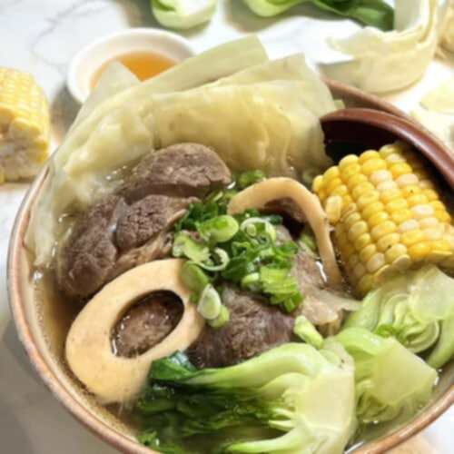

Bulalo is a classic Filipino soup known for its rich, clear broth and tender beef shanks with bone marrow. It is simmered for hours until the meat becomes tender and flavorful. Best served hot.
Provides protein and minerals from beef and vegetables. Nutritional value depends on preparation and portion size.